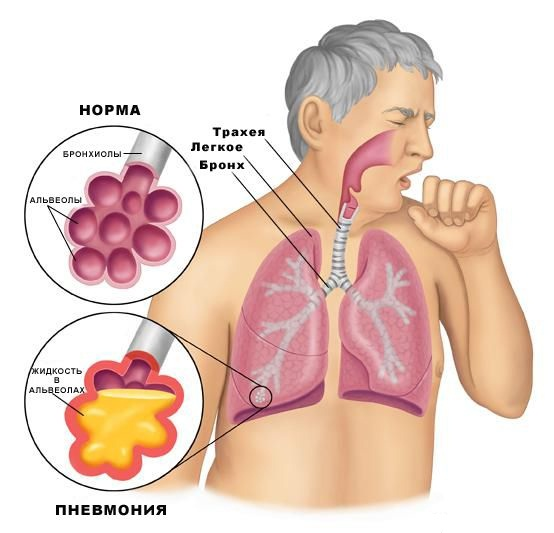

Пневмонія
"— це гостре інфекційне запалення легенів, при якому уражаються альвеоли (мікроскопічні бульбашки, які знаходитимуться на кінці найменших бронхів (бронхіол).
Найчастіше пневмонія, або по-простому, запалення легенів, виникає на фоні інших захворювань, але може також виступати як окрема хвороба. Крім безпосереднього процесу дихання, легені виконують багато функцій в нашому організмі: вони регулюють обмін рідини та солей, систему згортання крові і температуру тіла, крім того, вони захищають організм від шкідливих мікроорганізмів. Одним словом, легені — це своєрідний фільтр. Якщо організм людини переносить важку травму, операцію, опік, отруєння і т.д., токсини, які потрапляють у кров, виявляються в легенях. Власне кажучи, легені покликані очистити від них кров, але іноді вони просто не справляються — тоді трапляється запалення.
Збудниками пневмонії також є пневмококи, стафілококи, стрептококи, іноді пневмонії можуть бути викликані хламідіями, мікоплазмою, цитомегаловірусом та кандидами."
Лікарі стверджують, що навіть у здорової людини в організмі присутні віруси і бактерії, але тільки коли імунітет ослаблений, вони можуть атакувати різні органи, у випадку пневмонії — легені."
Залежно від площі ураження, пневмонія може бути вогнищевою, сегментарною, частково зливною, тотальною. Виділяють також односторонню і двосторонню пневмонію."

У випадку, якщо у вас сильний кашель і застуда тривожить вже довше 7 днів, не можете глибоко вдихнути і у вас бліда шкіра – все це дуже схоже на ознаки пневмонії і вам слід звернутися до лікаря вчасно
В залежності від характеру запального процесу, лікар повинен підібрати антибіотик. Якщо запалення легенів не важке, лікування пневмонії цілком можна проводити вдома. В іншому випадку — необхідна госпіталізація. Крім антибіотика, прописують також препарати, які розширюють бронхи і відхаркувальні засоби. Якщо ви вилікували цю хворобу, але через деякий час знову захворіли, необхідно пройти обстеження і переконатись, що це не хронічна пневмонія.
Як і при будь якій інтоксикації організму, при запаленні легенів, дуже важливо пити багато рідини. А також в обов’язковому порядку потрібно провітрювати приміщення і робити вологе прибирання, щоб уникнути пересушене повітря і попадання в легені пилу.
Симптоми пневмонії
підвищена температура;
загальна слабкість і біль у м’язах;
кашель з мокротою;
посилення голосового тремтіння;
вологі хрипи;
виражена блідість шкіри;
спроби вдихнути викликають напад кашлю;
Лікування пневмонії